Jan 10-12 | Perth
TBD
Day 1
Day 2
Day 3
The Global Financing Facility (GFF) supports country-led efforts to strengthen the use of timely data for decision-making, with the goal of improving primary healthcare (PHC) performance and RMNCAH-N outcomes.
Frequent Assessments and Health System Tools for Resilience (FASTR) is the GFF's rapid-cycle analytics framework for monitoring health system performance using high-frequency data.
FASTR brings together four complementary technical approaches:
Rapid-cycle approaches using routine HMIS data can:
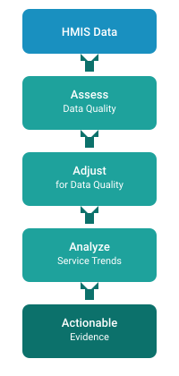
Routine health information systems are a critical source of data, but they are often underused due to concerns about data quality and long delays between data collection and analysis. Traditional household and facility surveys, while essential, are resource-intensive and infrequent.
FASTR's rapid-cycle analytics address this gap by providing:
FASTR prioritizes a core set of RMNCAH-N indicators that:
The indicator set can be expanded to reflect country-specific priorities.
Analysis is anchored in a standardized set of data quality metrics:
These metrics are summarized into an overall data quality score.
Content to be developed
This section will cover:
The FASTR approach focuses on data quality adjustments to expand the analyses countries can do with DHIS2 data and to generate more robust estimates.
The FASTR methodology includes specific approaches to:
These adjustments require processing that cannot be done within DHIS2's native analytics.
The FASTR approach uses more advanced statistical methods, such as regression analysis, which are not available in DHIS2. While DHIS2 can plot trends over time using raw data, FASTR can go further by:
The choice between DHIS2 and the FASTR approach should be guided by the specific purpose of your analysis.
Data should be downloaded for each indicator of interest, at facility level, and monthly for the period of interest.
We want to use the most granular data we have access to in order to make more fine tuned assessments for data quality. Using monthly facility level data allows us to conduct the most robust analysis.
The data extracted should include the following required elements:
We offer two tools for bulk DHIS2 data extraction:
API Script (Google Colab)
Data Downloader
Both tools enable efficient data extraction, and we provide training resources to support their use.
The Data Downloader is a desktop application for extracting data from DHIS2.
Key features:
Download from GitHub:
https://github.com/worldbank/DHIS2-Downloader/releases/
Facilitator will demonstrate the Data Downloader
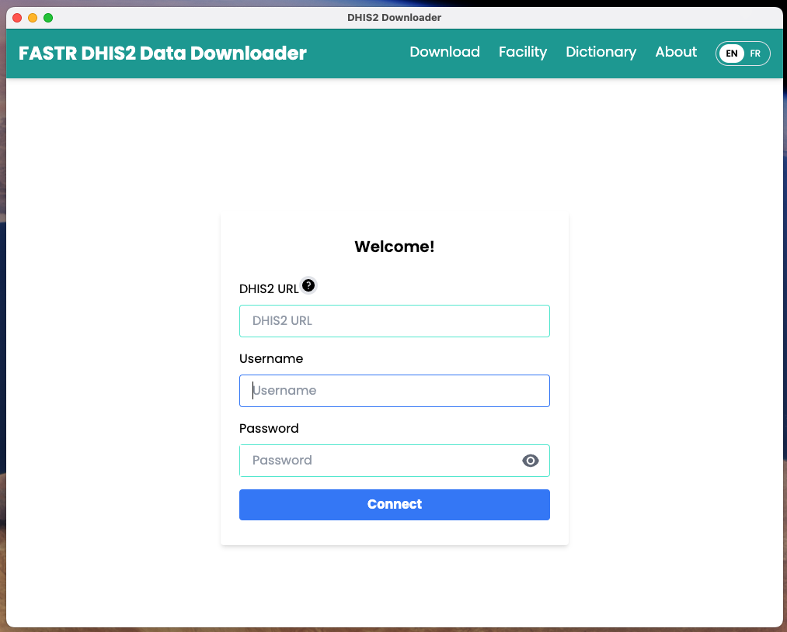
Connect to your DHIS2 instance
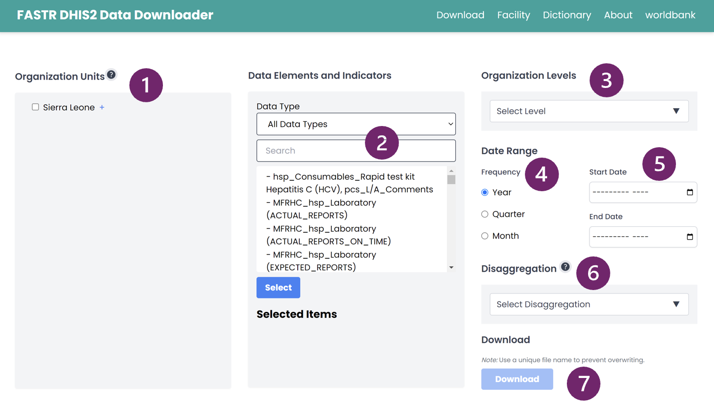
Main interface
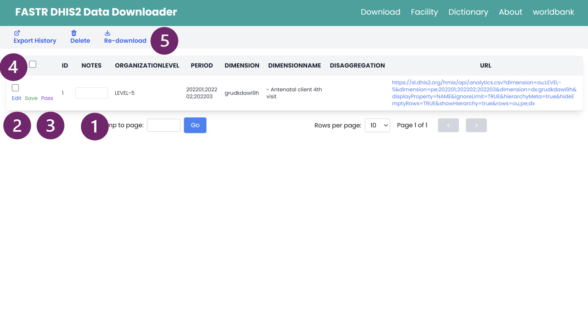
Track your downloads
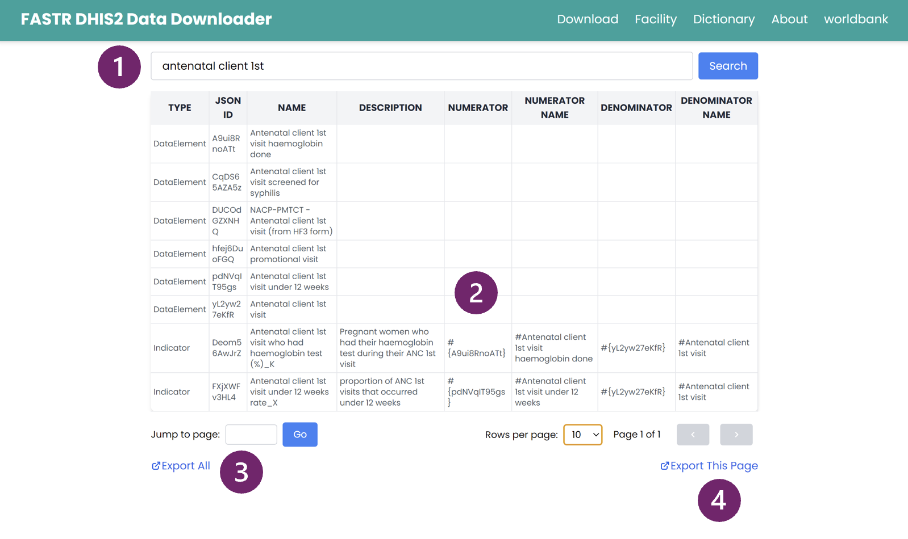
Explore available data
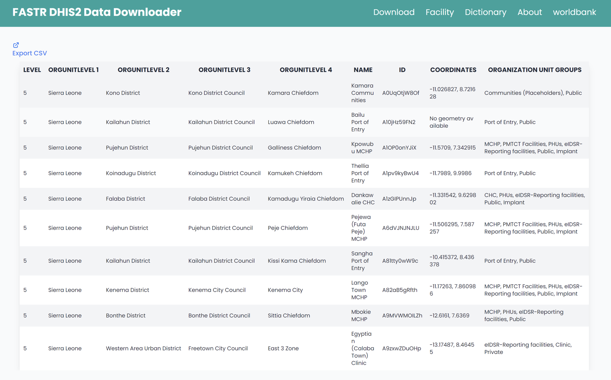
Facility management
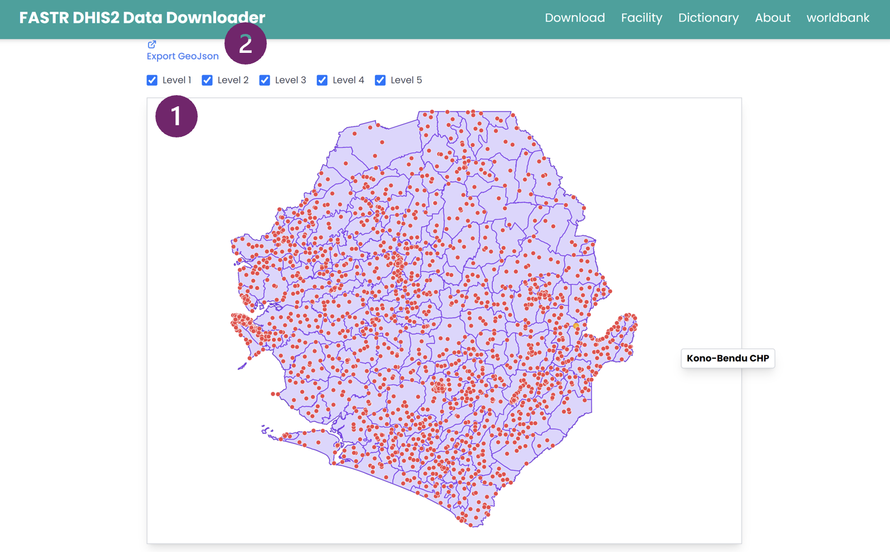
Geographic visualization
Day 1 Complete
We resume tomorrow at 09:00
The FASTR analytics platform is a web-based tool for data quality assessment, adjustment, and analysis of routine health data.
In this session, we will provide a conceptual walkthrough of the platform and its capabilities.
In this demo, we will:
Facilitator will demonstrate in the live platform
In this hands-on session, we will configure:
Participants will work directly in the platform
In this hands-on session, we will:
Participants will import their country's data
Participants will configure and run modules on their data
Participants will create their first project
Participants will build visualizations from their analysis
Participants will create their first quarterly report draft
15 minutes
Back at
Evaluating the reliability of routine health information system data
Challenge: Routine health facility data may contain quality limitations:
Implications: Data quality limitations affect decision-making
Objective 1: Enable analytical adjustment
Systematic data quality assessment supports the application of targeted adjustments, enhancing the utility of HMIS data for evidence-based decision-making.
Objective 2: Monitor data quality trends
Data quality assessment enables ongoing monitoring to:
1. Completeness Are health facilities submitting reports consistently?
2. Outlier prevalence Are reported values within plausible ranges?
3. Internal consistency Do related indicators demonstrate expected relationships?
These three dimensions provide a comprehensive assessment of data reliability for analytical purposes.
What it measures: The extent to which facilities report data on selected core indicators
Why it matters:
Key distinction: Indicator completeness ≠ reporting completeness. This metric examines specific data elements, not just whether the monthly form was submitted.
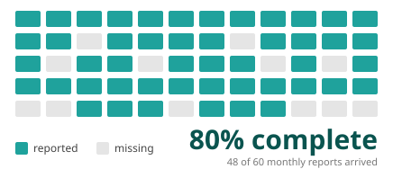
For the FASTR analysis, completeness is defined as:
The percentage of reporting facilities each month out of the total number of facilities expected to report.
A high level of completeness does not necessarily indicate that the HMIS is representative of all service delivery in the country as some services may not be delivered in facilities, or some facilities may not report
For countries where the DHIS2 system does not store 0's, indicator completeness may be underestimated if there are many low-volume facilities for a given indicator
For a given indicator in a given time period, the percent of monthly values that are complete:
% complete = # monthly values that are complete / total N of monthly values
The presence of outliers examines whether a data point in a series of values is extreme (either abnormally high or low) in relation to others in the series.
Outliers can be the result of changes in programmatic activities (such as an intensified campaign) or can be data quality problems.
For the FASTR analysis, we identify outliers which are suspiciously high values compared to the usual volume of services reported by the facility (e.g., low values are not identified as outliers in the FASTR analysis).
Region A displays an anomalous spike in February that substantially exceeds values reported by other regions — indicative of a data entry error or reporting issue.
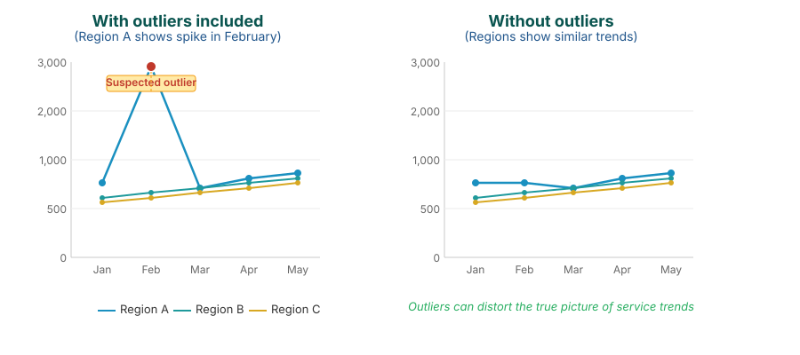
Outliers are identified by assessing the within-facility variation in monthly reporting for each indicator.
An outlier is defined as:
A value greater than 10 times the median absolute deviation (MAD) from the monthly median value for the indicator in each time period, OR a value for which the proportional contribution in volume for a facility, indicator, and time period is greater than 80%
AND for which:
For a given indicator in a given time period, the percent of monthly values that are outliers:
% outliers = # monthly values that are outliers / total N of monthly values
Program indicators with a predictable relationship are examined to determine whether the expected relationship exists between them. In other words, this process examines whether the observed relationship between the indicators, as shown in the reported data, is that which is expected.
These pairs have expected relationships. We expect ANC1 > ANC4 since not all women complete four visits.
BCG is a birth dose vaccine so we expect similar numbers to facility deliveries, with a 30% tolerance for variability.
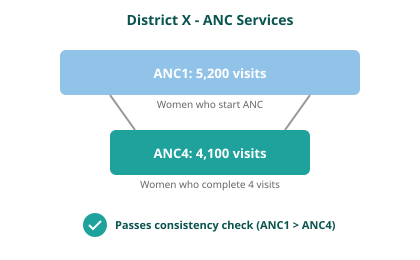
Patients often access different services at different facilities within a district:
Checking consistency at the facility level would miss these patterns. Aggregating to district level captures the complete picture of service utilization within a geographic area.
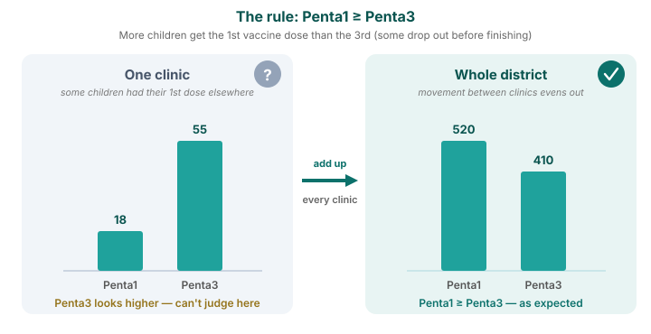
A composite measure of data quality provides an overall view of how well a dataset meets quality standards.
By integrating multiple dimensions of data quality into a single score, it simplifies the interpretation of detailed information from several measures. This allows health systems to quickly assess the reliability of data, making it easier to identify trends and issues at a glance.
For the FASTR analysis, we defined adequate data quality as:
For a given indicator in a given time period, the percent of monthly values meeting all DQA criteria:
% adequate quality = # monthly values meeting all criteria / total N of monthly values
The mean DQA score shows how close a facility's data is to meeting all quality criteria. A score of 100% means the data passes all DQA checks—no missing values, no outliers, and consistent reporting.
Mean DQA = (completeness & outlier score + consistency score) / 2
Correcting outliers and imputing missing values to improve data reliability
Routine HMIS data contain two common limitations that can distort analytical results:
FASTR addresses these limitations by replacing problematic values with estimates derived from each facility's historical reporting patterns.
To support transparency and sensitivity analysis, FASTR produces four parallel datasets:
Certain indicators are excluded from the adjustment process:
Outlier values are replaced using facility-specific historical data. The adjustment follows a hierarchical approach:
For months identified as incomplete or missing, values are imputed using the same 6-month rolling average approach applied to outlier adjustment.
This approach prevents temporary reporting gaps from creating artificial declines in service volumes.
Day 2 Complete
Detecting and quantifying changes in health service delivery over time
1. Measure changes in service volume
Year-over-year comparison of service volumes identifies increases or decreases across regions and indicators.
2. Detect and quantify disruptions
Statistical comparison of observed volumes against expected levels—derived from historical trends and seasonal patterns—enables identification and quantification of service shortfalls or surpluses.
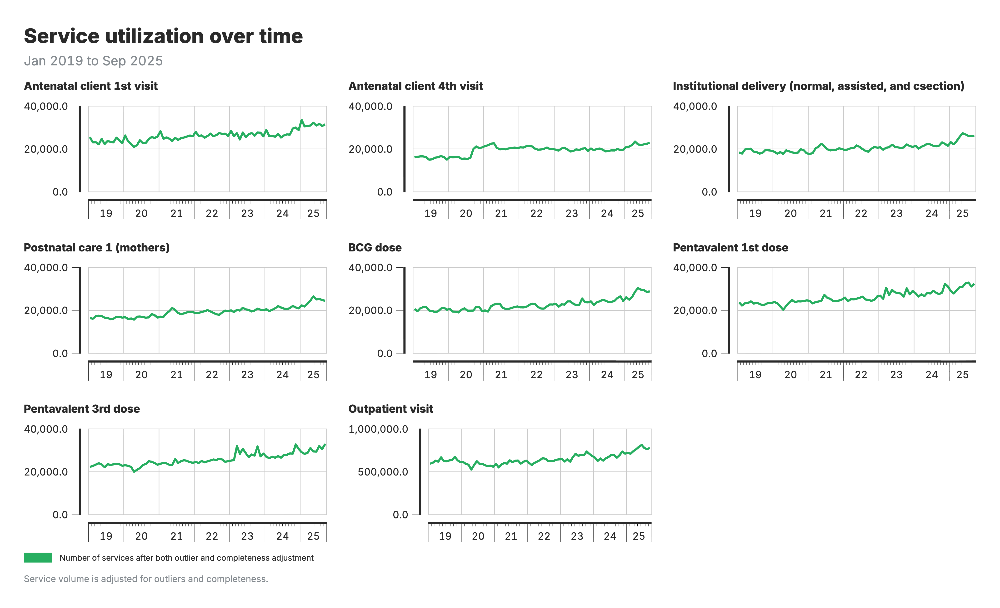
Year-over-year percent change quantifies shifts in service delivery between consecutive years.
For each indicator and region, total volume in the current year is compared to the previous year:
Percent change = (Current year − Previous year) ÷ Previous year × 100
Changes exceeding ±10% are flagged for review.
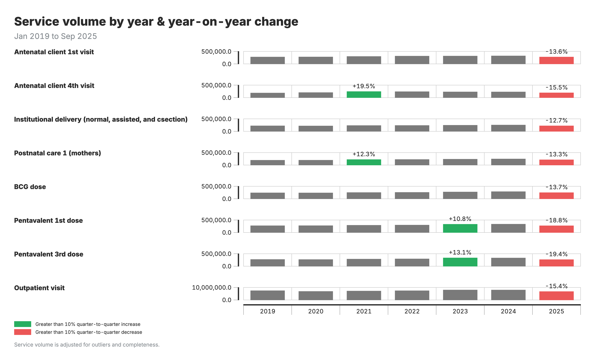
Bars show annual service volumes by region. Percentages indicate year-over-year change.
Key considerations:
Our approach to service disruptions and surpluses utilizes an interrupted time series regression with facility-level fixed effects. Previous large and unexpected changes in historical data are removed. Unexpected volume changes are estimated by comparing observed volume to expected volume based on historical trends and seasonality.
Disruptions are flagged when volumes fall below anticipated levels, signaling potential barriers to access, resource shortages, or system failures.
Surpluses occur when volumes exceed expectations, which may indicate increased demand, over-reporting, or changes in service delivery.
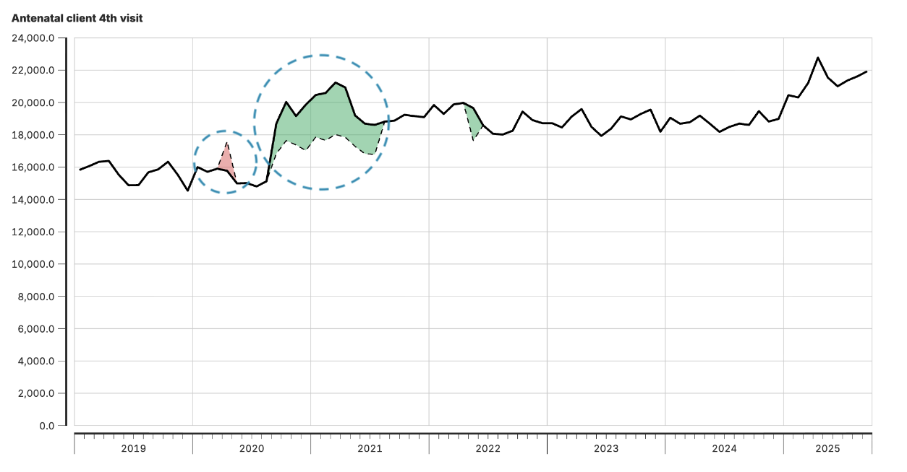
Using past data to set expectations: We look at the past few years of data to understand the typical pattern for each month, accounting for regular seasonal changes.
Spotting unusual changes: We compare current service volumes to expectations. If we see volumes much higher or lower than expected, we flag it as an unusual change.
Handling past disruptions: We adjust historical data by removing previous big, unexpected changes so one-off events don't skew our understanding of what's "normal."
Detecting disruptions over time: We look at trends to see if there are clear shifts in health service use over several months.
Extension of service utilization analysis, using more complex statistical approaches not available in DHIS2.
Using a regression framework, we are able to:
This improves the ability to interpret and compare utilization data across national and sub-national areas without needing population denominators.
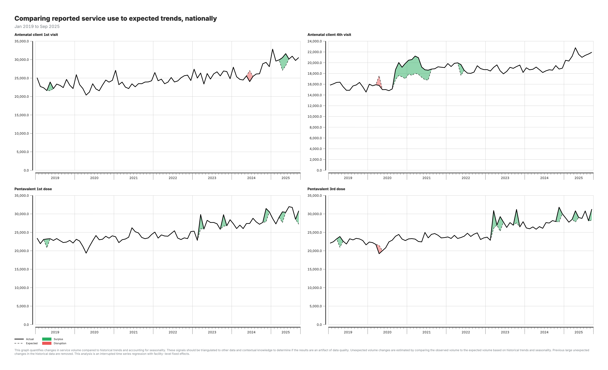
National-level comparison of observed service volumes against expected values derived from historical trends and seasonal patterns.
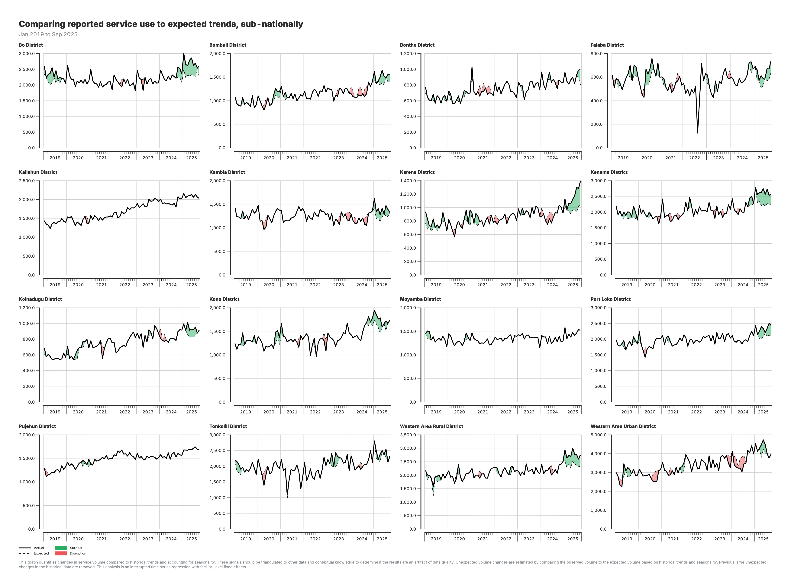
Subnational disaggregation enables identification of geographic areas where disruptions are concentrated.
Estimating the percentage of the target population that received a given health service
Our approach derives and validates population denominators, significantly improving coverage estimates reported from HMIS systems.
In countries with accurate data, this approach helps identify subnational inequities and updates outdated estimates, while in countries with less precise data, the trends still provide valuable insights into performance.
We use these estimates to track recent trends and subnational disparities in the coverage of selected health services.
The coverage estimation module operates in two sequential parts:
Service coverage represents the proportion of the target population that received a specified health service.
Each health indicator corresponds to a specific target population:
Sequential demographic adjustments transform one target population estimate into another. Starting from pregnancies, demographic factors are applied to derive subsequent denominators:
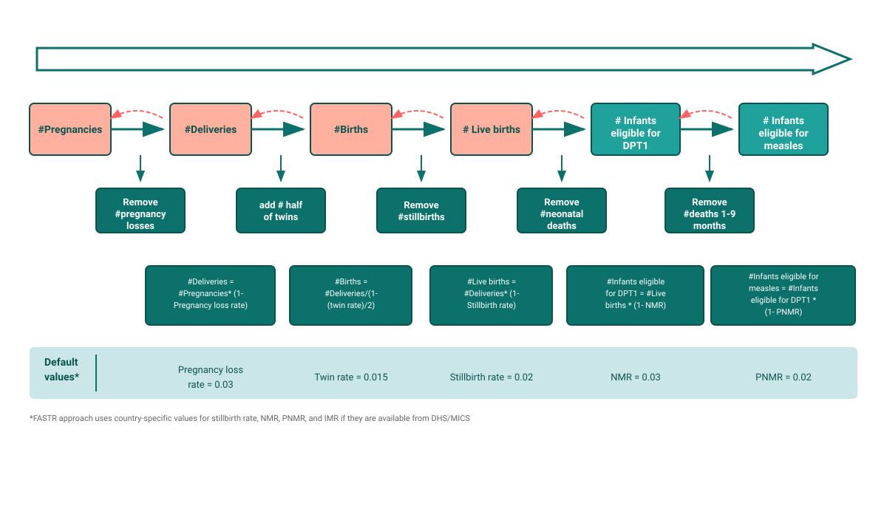
Starting from ANC1 service counts, demographic adjustment factors are applied sequentially to derive denominators for other services:
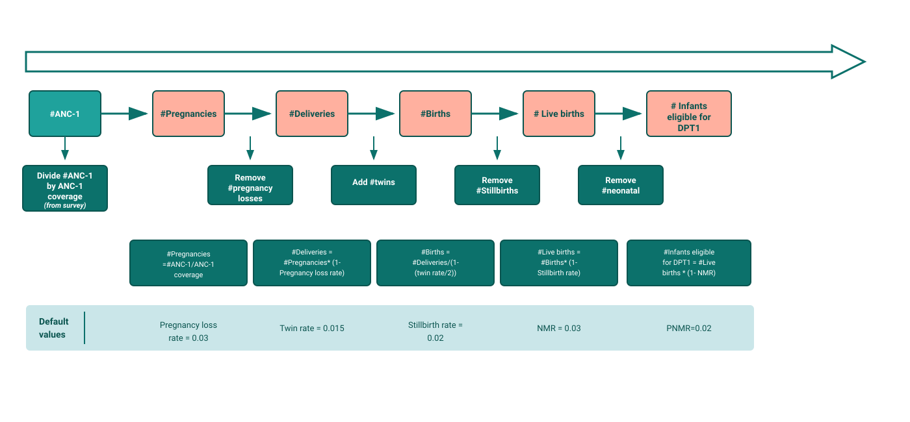
From any entry point, the cascade derives denominators in both directions:
Backward derivation enables estimation of upstream populations from downstream service counts.
Each HMIS indicator serves as an entry point. The module derives all target populations via forward and backward cascades:
For each indicator, the module selects the denominator that produces coverage closest to the survey benchmark.
Selection algorithm:
Selection is made per indicator and geographic area. Users may override automatic selections in Part 2.
The module projects the most recent survey value forward using trends observed in HMIS-derived coverage:
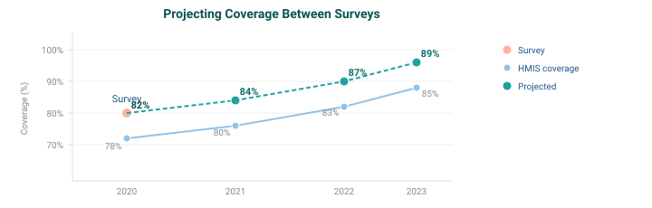
Year-over-year changes (deltas) in HMIS coverage are calculated and applied to the last survey value. This approach preserves the survey baseline while incorporating observed service delivery trends.
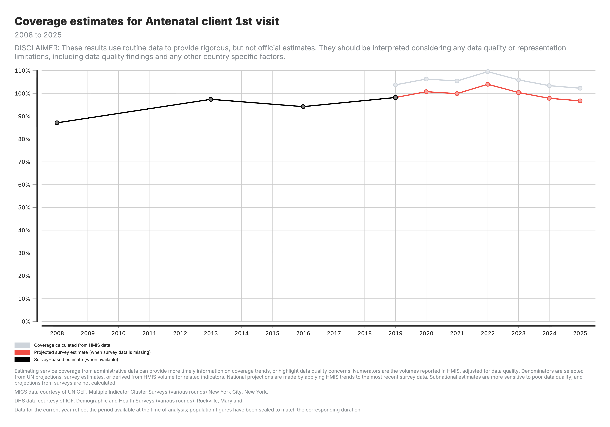
Black line/points show survey data (DHS/MICS) as the household survey reference. Grey line/points show HMIS-based coverage from facility data. Red line/points show projected coverage — survey estimates extended using HMIS trends.
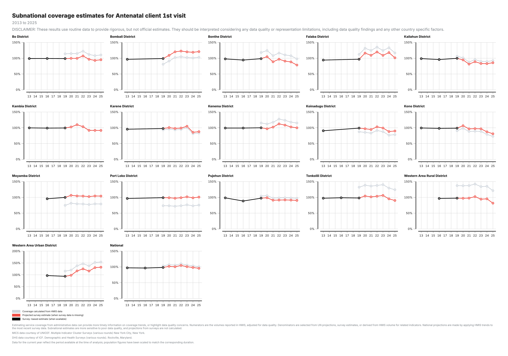
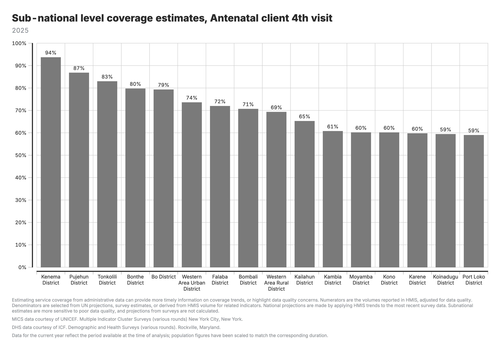
60 minutes
Interpretation connects data patterns to programmatic meaning.
For every FASTR output, ask three questions:
Moving from numbers to insights requires context, critical thinking, and programmatic knowledge.
Results are what the analysis found (data quality scores, coverage estimations, service utilization numbers). They are often many in number, complex, hard to understand 'at a glance', and lacking interpretation.
Key takeaways are what the results are telling us — why the results matter, the 'so what'. They should be few in number, simple and clear, easy to remember, and actionable.
A data use roadmap is a strategic plan that outlines how data will be utilized, shared, and disseminated effectively.
FASTR Team
Email:
Website: https://www.globalfinancingfacility.org/